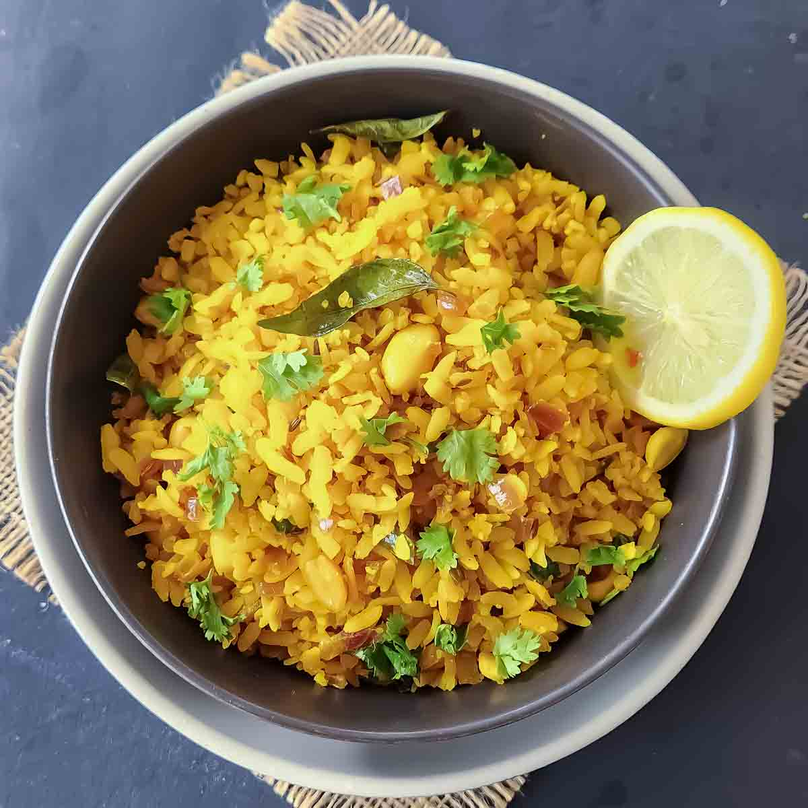

POHA - KING OF INDORE

Home
DESCRIPTION
Poha Recipe is a quick, flavorful Indian breakfast made with flattened rice, onions, peanuts, curry leaves, and a simple tempering of spices. It comes together in about 20 minutes and makes a light yet satisfying meal.
Poha is enjoyed throughout India, with regional variations in the spices and toppings.Maharashtrian pohe , which I grew up eating, commonly feature mustard seeds, curry leaves, green chilies, turmeric, peanuts, onions, and fresh lemon juice.
The key is getting the poha texture right. You want soft, hydrated flakes that still hold their shape. Over-soaking can turn poha mushy. Perfectly cooked pohe are tender, fluffy, savory, slightly tangy, and full of texture from roasted peanuts.
INGREDIENTS for making Poha
- Poha: Use thick or medium-thick poha for the best texture. Thin poha can become soft very quickly.
- Onion: Finely chopped onion adds sweetness and savory flavor.
- Peanuts: Roasted peanuts add a wonderful crunch. You can roast them separately before making the poha.
- Cumin seeds: They add earthy flavor.
- Curry leaves: Fresh curry leaves make a big difference in the aroma.
- Green chilies: Add as much or as little as you like.
- Turmeric: It gives poha its beautiful golden color.
- Red Chili Powder: Adds the spicy notes.
- Lemon juice: Add it at the end. It brightens the entire dish.
- Cilantro: Fresh cilantro adds a burst of freshness.
STEPS to make poha
- Rinse the poha
- Cook the onions and peanuts
- Add the poha
- Finish with lemon and cilantro